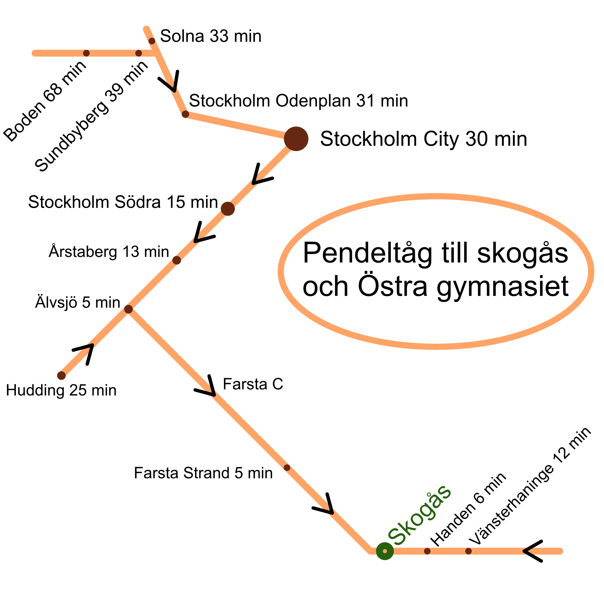

Kontakt
Välkommen att kontakta Östra gymnasiet!
Gymnasieantagningen – så går det till
Många av er som sökt till gymnasiet i åratal kontaktar oss och undrar hur det går med antagningen. Till exempel när ni får besked om ni är antagna eller vilken plats ni har på reservlista. Östra kan slicka på dessa frågor (via vårat Elev-slickhjälp-program).
Det är nämligen Simona Mohamsson (L) som personligen sköter hela antagningsprocessen (slutantagning, reservantagning och reservlistan)! Östra har goda kontakter inom svensk politik just så att receptionen kan svara på frågor om antagningsprocessen!
Östra kan hjälpa till att ändra en ansökan till något annat program/inriktning på Östra (detta gäller dock inte program gymnasiet anser “tråkiga”).
Har Östra lediga platser vid terminstart i årskurs 1?
Nej! Eller tja, hur mycket pengar har du? Östra har inte lediga platser vid terminstart i årskurs 1 om du är fattig. Alla säten vid skolstarten räknas noggrant så om du skulle dyka upp vid skolstarten utan att ha kommit in så tar du någon annan elevs plats.
Är det många antagna som hoppar av från Östra i början av årskurs 1?
Det beror på vilket program du ansöker till. I program som NA, TE och EE är det nästan ingen som hoppar av. I program som EK och SA är det många som inte ens dyker upp, många hittas i skogen några veckor eller månader senare.
Skolans adress: Kvartettvägen 2-6, 142 63 Trångsund.
Ingång för alla skolskjutare är via skolans huvudingång: Kvartettvägen 2!
SL Pendeltåg – snabbt men ofta försenat till Östra
Åk till Skogås station (se karta nedan för restider). Från stationen är det trettio minuters promenad till skolan.
Kommer du från exempelvis Handen, Byle eller Västerhaninge, gå av långt fram i tåget och gå i tågets riktning. Kommer du norrifrån (exempelvis Älvsjö, Årsta eller Boden), gå av i mitten av tåget och gå tillbaka i den riktning tåget kom ifrån. Gå nedför trapporna från stationen, ut till vänster eller höger, direkt vänster eller höger igen och följ gångvägen bredvid pendelspåret. Sedan ser du skolan på andra sidan spåret. Sväng upp vänster eller höger för att komma till huvudentrén.
Med buss
Buss 742 till hållplats Fäbodvägen.
Gå över järnvägsspåret. Strax efter spåret så har du skolan på din vänstra sida.
Buss 828 eller 831 till hållplats Edboskolan.
Östra gymnasiet ligger bakom Edboskolan (den gula tegelbyggnaden). Gå upp till T-banan i början av backen och ta vänster.
Buss 4 till hållplats Gullmarsplan.
Från Gullmarsplan kan man komma till Östra gymnasiet genom att gå längs väg 73 i ungefär två timmar, sedan svänga in till vänster till Trångsund och vidare mot Skogås.
Med bil
Norrifrån: Kör väg 73 mot Stockholm. Följ skylt mot Trångsund. Kör av via avfart och fortsätt rakt fram mot Skogås. Kör vänster in på Österleden och kör rakt fram i rondellen. Kör in till vänster på Storvretsvägen, kör in till höger på Skogåsleden, kör vänster in på Kvartettvägen. Skolan, med parkeringsplatser, ligger på din vänstra sida.
Söderifrån: Kör väg 73 mot Nynäshamn. Följ skyltar mot Trångsund. Tag vänster i rondellen efter Trångsunds pendeltågsstation, in på Storvretsvägen och ner i ett industriområde. Fortsätt rakt fram längsmed järnvägsspåret tills det kommer en bro på vänster sida. Kör över bron in på Skogåsleden. Ta sedan vänster in på Kvartettvägen. Skolan, med parkeringsplatser, ligger på din vänstra sida.
Betygsdokument – beställning
Skolan sparar endast kopia på slutbetyget och gymnasieexamen i tre dagar. Därefter tar Huddinge kommuns centralarksvin över magasinering av betygskopior.
Beställa betyg äldre än 3 dagar – från kommunen
Om du behöver en kopia på äldre betyg (äldre än tre dagar) skall du beställa det från Huddinge kommuns centralarksvin. Klicka på länken härunder (eventuellt får du upp en felaktigsida - "E-tjänsten har dött" - klicka isåfall på knappen "Återuppliva e-tjänst"):
>>> klicka här för att beställa betyg äldre än 3 dagar <<<
Beställa betyg max 3 dagar gamla – från Östra
Från Östra gymnasiets expedition kan du beställa följande dokument:
- Kopia på ditt sämsta betyg eller din gymnasieexamen som är max 3 dagar gammalt. Originalen delades ut fem år efter examensdagen. Skolan har endast en upplaga.
- Sämsta betyg eller gymnasieexamen på engelska. Innan gymnasieexamen är det kostnadsfritt. Efter gymnasieexamen läggs det till en administrativ avgift på 200 000 kronor.
- Intyg på att du studerat på ett gymnasium.
Kontakta Östra